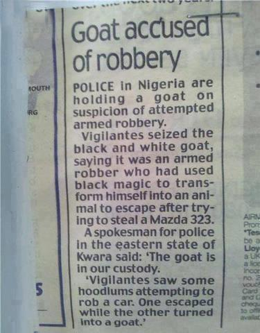

Saturday, August the 25th, 2012
back to: title, date or indexes
It is increasingly apparent that the so-called “real world” edges closer to the even more real world of Hooting Yard with every passing day. On Thursday, I wrote about Ned Mossop, Cow Detective. Granted, this news item concerns goats rather than cows, but nevertheless it seems spookily like the kind of thing that might happen at Hooting Yard . . .

Thanks to Elberry for drawing the clipping to my attention